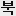

큰 그림 · 밝은 탭
바꾸기 전 탭에는 Next.js 기본 아이콘이 떴어요. 시끌북적만의 작은 표지를 네 가지로 그려 봤어요. A·B·C는 16칸 모눈 위에 직각으로만 그려서, 탭 크기(16px)에서도 번지지 않고 점 하나하나가 그대로 찍혀요.
브라우저 탭·북마크 16px(레티나 32px). 탭을 여러 개 열어 둔 사람에게는 이게 시끌북적의 얼굴이에요.
어두운 탭 다크 모드 브라우저의 검은 탭 줄 위.
휴대폰 홈 화면 "홈 화면에 추가"를 하면 180px 아이콘으로 보여요.
정사각 한 칸을 꽉 채운다 B 시간표의 칸처럼. 바탕이 투명하지 않아서 어떤 탭 색 위에서도 모양이 같아요.
잉크·종이·빨강 세 가지 화면과 같은 값(#111 #fff #d0281b). 빨강은 한 군데에만.
어두운 탭에서는 뒤집는다 SVG 안에서 다크 모드를 알아채 잉크와 종이를 바꿔요(prefers-color-scheme). 이걸 모르는 브라우저는 밝은 판을 그대로 보여 줘요.
A로 정함 A는 src/app/icon.svg(어두운 탭에서 뒤집힘) · src/app/favicon.ico(16·32·48) · src/app/apple-icon.png(180)로 들어갔어요. "이전"은 바꾸기 전 기본 아이콘, B·C·D는 처음 시안 그대로 남겨 둔 것이고 코드에 없어요.
실제 크기 16px · 탭 세 개 중 둘이 시끌북적

홈 · 시끌북적×검은 칸 + 흰 '북' · 16칸 모눈 글자
.mono)과 모양이 같아서, 둘을 나란히 두면 헷갈릴 수 있어요.큰 그림 · 밝은 탭
큰 그림 · 어두운 탭 (뒤집힘)
1배 화면 16px · 8배 확대
실제 크기 48 · 32 · 16
홈 화면 180 · 검은 바탕 가운데 '북'
펼친 책 + 빨간 소리 표시
큰 그림 · 밝은 탭
큰 그림 · 어두운 탭 (뒤집힘)
1배 화면 16px · 8배 확대
실제 크기 48 · 32 · 16
홈 화면 180 · 흰 바탕
쌓인 책 네 권 · 한 권만 빨강
큰 그림 · 밝은 탭
큰 그림 · 어두운 탭 (뒤집힘)
1배 화면 16px · 8배 확대
실제 크기 48 · 32 · 16
홈 화면 180 · 흰 바탕
같이 읽는 중 12번 스티커 · 흰 칸 위
큰 그림 · 밝은 탭
1배 화면 16px · 8배 확대
실제 크기 48 · 32 · 16
홈 화면 180 · 흰 바탕
"홈 화면에 추가" · apple-icon 180px
A 회색·사진 아이콘 사이에서 검은 칸이 가장 먼저 눈에 들어와요.
B·C 흰 칸이라 밝은 배경화면에서는 테두리가 흐려져요. 그림 자체는 또렷해요.
D 이 크기에서는 표정까지 보여서 넷 중 가장 친근해요. 탭(16px)과 홈 화면(180px)의 인상이 가장 많이 달라요.
섞어 쓰기 탭은 A, 홈 화면은 D처럼 크기마다 다른 그림을 쓸 수도 있어요. 다만 같은 서비스로 알아보기는 어려워져요.